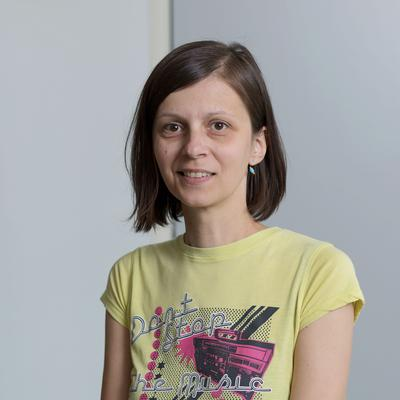

Invited Talks
Johanna Sepúlveda, Airbus Defence and Space - Intelligence, Germany
Chief Engineer - R&T Leader for Quantum Secure Communications & Optical
Airbus Expert on Post-Quantum Secure Communications
Johanna Sepúlveda received the M.Sc. and Ph.D. degrees in Electrical Engineering – Microelectronics by the University of São Paulo, Brazil. She was a Senior Researcher at the University of South Brittany (France), INRIA-Photonics (France) and at the Technical University of Munich (Germany). Currently she holds a position as the Airbus Expert on Quantum-Secure Technologies. Also she is a member of the Strategic Advisory Board of Quantum Technologies for the European Commission. She has more than 15 years of experience in R&T and R&D in the area of security, networked systems, HPC and quantum technologies.
Talk Title:
Quantum-Secure World: Challenges and Opportunities
Abstract:
Quantum technologies represent a revolution in the way we compute, communicate and sense the environment around us and in the deep space. In the area of security, these technologies also represent opportunities and risks. In this talk, the different security aspects of the quantum technologies will be discussed. It will be highlighted how traditional and quantum technologies can work together to achieve quantum-safe infrastructures.
Simona Samardjiska, Radboud University Nijmegen, the Netherlands
Assistant Professor at the Digital Security Group of Radboud University
Simona Samardjiska is an assistant professor at the Digital Security Group at Radboud University, the Netherlands. Before obtaining this position in September 2019, she was a postdoc in the same group. From 2015-2017 she was an assistant professor at the Faculty for Computer Science and Engineering, UKIM, Macedonia. She obtained her Ph.D. at NTNU in Norway in 2015, on the topic of Multivariate Cryptography.
Her expertise and research interests are mostly in the mathematics of post-quantum cryptography, especially multivariate and code-based cryptography. She has been actively involved in the current NIST standardization process for Post-Quantum Cryptography as a principal submitter of the second-round candidate MQDSS. She has also contributed to the understanding of the security of other schemes in the competition both finalists and second-round candidates, by analyzing their classical security and resistance to Side Channel attacks.
She has published on several IACR conferences and IEEE Symposiums and has been a program committee member of various cryptography-related conferences and workshops. She is an activist for gender balance and diversity in exact sciences, especially in computer science.
Talk Title:
Making Breaking Post-Quantum Crypto
Abstract:
Post-Quantum Cryptography investigates the design and security of cryptosystems believed to be secure even against adversaries in possesion of a quantum computer. Although a large scale quantum computer capable of breaking today's cryptography in use is still at least a decade away, the research in the area is in full swing. The US National Institute of Standards and Technology, NIST, has recently announced the PQ algorithms that are going to be standardized, following a lengthy process of public scrutiny of the proposed algorithms.
In this talk, Simona Samardjiska will present her contribution to the NIST PQ standardization process, both as a designer and as cryptanalist and the lessons learned along the way. She will also talk about the upcoming fourth signature round and the potential candidate signature proposals.